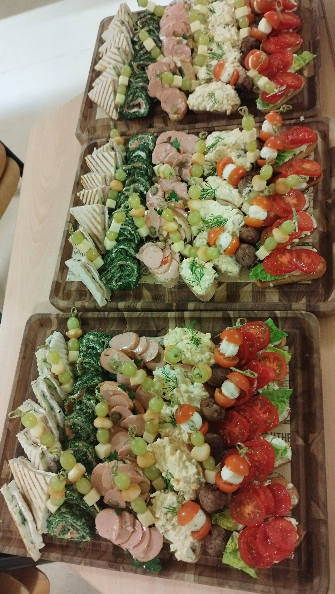
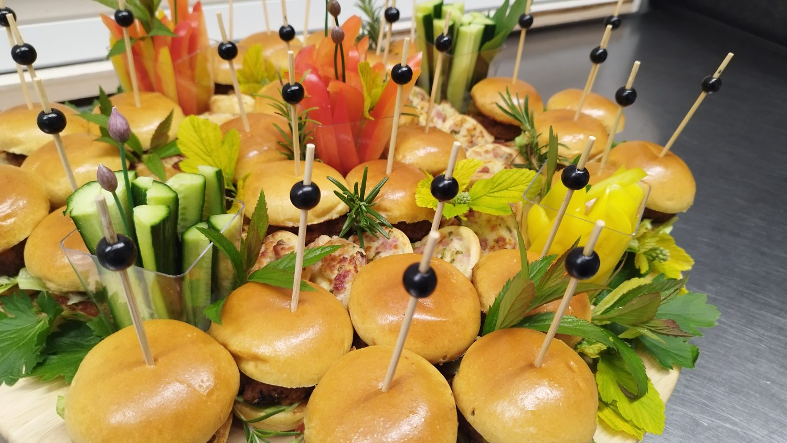
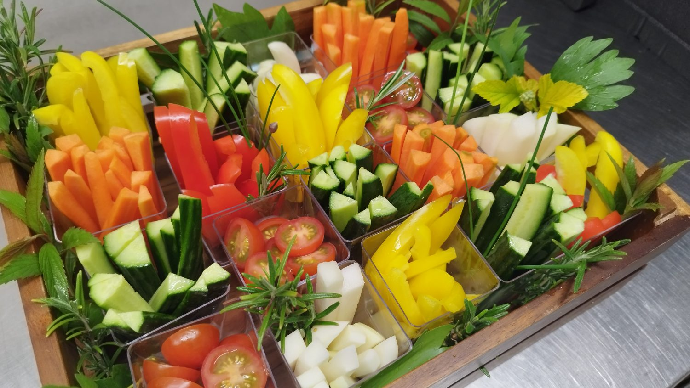
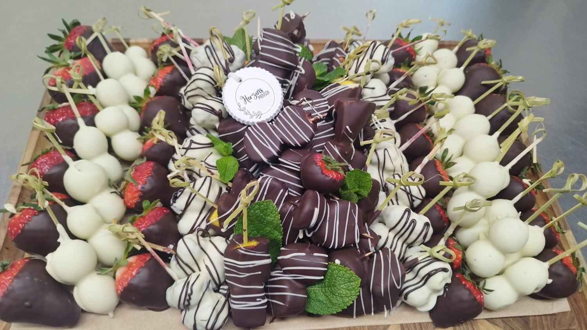

Schulküche Markersdorf
Frisch gekocht.
Frisch gekocht.
Für eure Kinder.
Jeden Tag ein warmes Mittagessen für Schulen und Kindergärten in und um Markersdorf — regional, ausgewogen und mit Liebe zubereitet.
Jeden Tag ein warmes Mittagessen für Schulen und Kindergärten in und um Markersdorf — regional, ausgewogen und mit Liebe zubereitet.
Wir kochen so, wie wir auch zu Hause für unsere eigenen Kinder kochen würden — frisch, ehrlich und mit guten Zutaten aus der Region.
Wir kochen jeden Morgen in unserer eigenen Küche. Nichts aus der Tüte, nichts von gestern — sondern warmes Essen, das zur Mittagszeit fertig ist.
Kartoffeln vom Hof nebenan, Gemüse aus der Oberlausitz. Wir wissen, wo unsere Zutaten herkommen — und kochen mit dem, was die Jahreszeit gibt.
Bunt, abwechslungsreich und kindgerecht gewürzt — abgestimmt mit Schulen und Kitas. Allergien und Unverträglichkeiten haben wir immer im Blick.

Morgens um sechs gehen bei uns die Töpfe an. Katrin Lange und ihr Team schälen, schnippeln und rühren — damit mittags in jeder Einrichtung ein frisches, warmes Essen auf dem Tisch steht.
Wir kochen mit Augenmaß und Erfahrung: kindgerechte Portionen, kräftige sächsische Klassiker und immer eine vegetarische Alternative dazu.
Jeden Tag zwei Gerichte zur Wahl — eines davon immer vegetarisch. Den vollständigen Plan findest du auf der Speiseplan-Seite und jederzeit in der Eltern-App.
Wir kochen nicht nur für Schulen und Kitas — auch euer Fest versorgen wir gern. Ob Geburtstag, Firmenfeier oder Familienfest: Wir zaubern Buffets, belegte Platten, Fingerfood und Dessertvariationen frisch aus unserer Küche. Sagt uns, wofür — wir kümmern uns um den Rest.




Essen ab- und anmelden, den Speiseplan ansehen, die Abrechnung prüfen — die Eltern-App hast du immer in der Tasche. Schnell, übersichtlich und genau auf deine Kinder zugeschnitten.